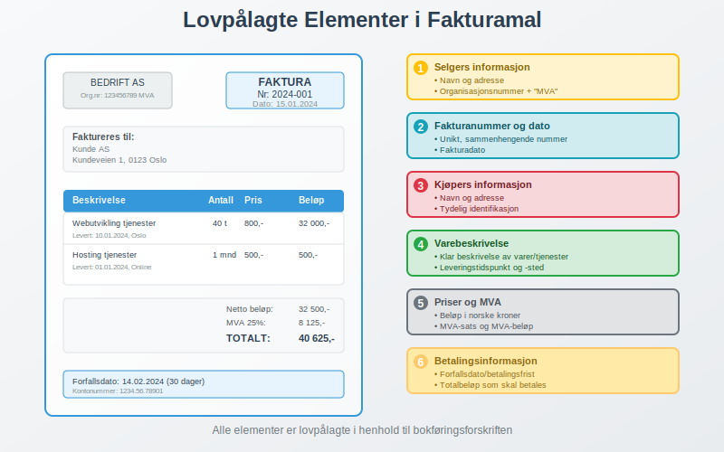
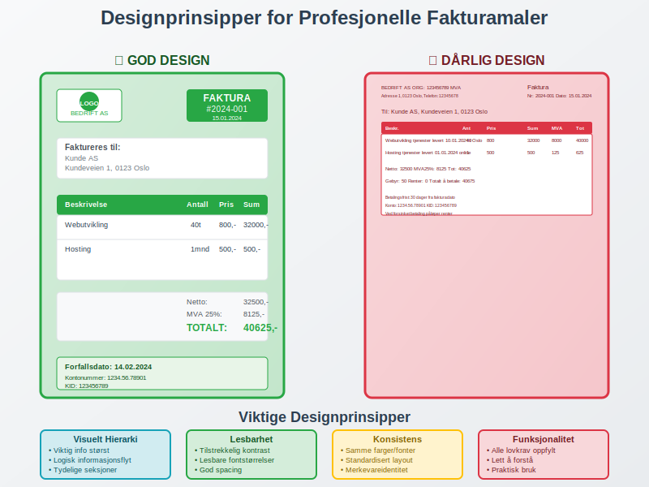
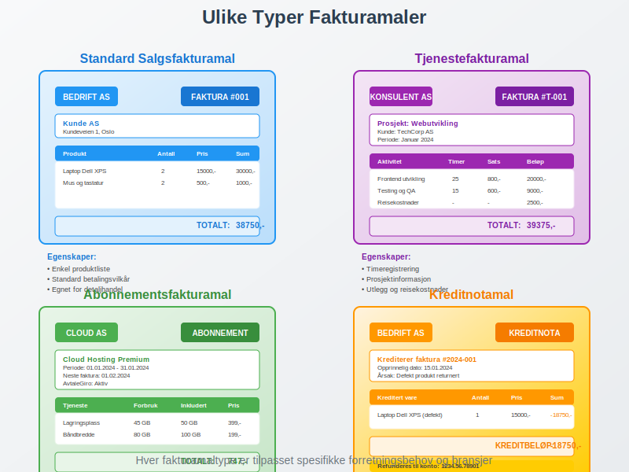
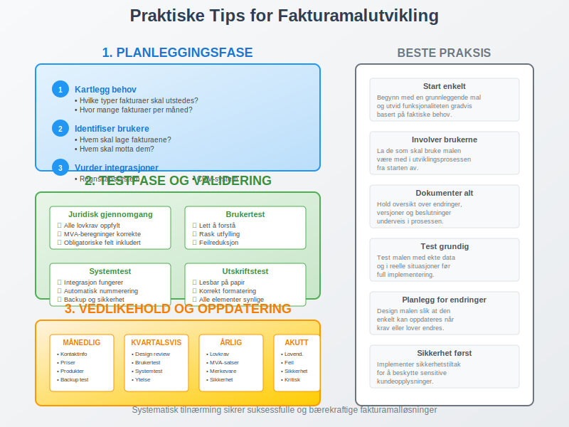

En fakturamal er en forhåndsdefinert struktur eller skabelon som brukes til å lage konsistente og profesjonelle fakturaer. Fakturamaler sikrer at alle lovpålagte krav oppfylles, fremmer merkevareidentitet og effektiviserer faktureringsprosessen. For bedrifter som bruker ERP-systemer eller elektronisk fakturering, er gode fakturamaler essensielle for automatisert og feilfri fakturabehandling.
Seksjon 1: Lovpålagte Krav til Fakturamaler
I Norge reguleres fakturainnhold av bokføringsforskriften, og alle fakturamaler må inneholde obligatoriske elementer for å være juridisk gyldige.

Obligatoriske Elementer i Fakturamal
Enhver fakturamal må inneholde følgende lovpålagte elementer:
| Element | Beskrivelse | Plassering |
|---|---|---|
| Fakturanummer | Unikt, maskinelt tildelt nummer i sammenhengende serie | Øverst til høyre |
| Fakturadato | Dato for fakturautstedelse | Ved fakturanummer |
| Selgers informasjon | Navn, adresse, organisasjonsnummer (+ “MVA” hvis registrert) | Øverst til venstre |
| Kjøpers informasjon | Navn og adresse til mottaker | Under selgers info |
| Varebeskrivelse | Klar og entydig beskrivelse av varer/tjenester | Hovedtabellen |
| Leveringsinformasjon | Tidspunkt og sted for levering | I varebeskrivelsen |
| Priser og MVA | Beløp i NOK, MVA-sats og MVA-beløp | Høyre kolonne |
| Totalbeløp | Sum som skal betales | Nederst til høyre |
| Betalingsfrist | Forfallsdato for betaling | Nederst |
Spesielle Krav for MVA-registrerte Bedrifter
Bedrifter som er registrert for merverdiavgift må inkludere ytterligere elementer i fakturamalene:
- MVA-nummer etter organisasjonsnummer
- MVA-sats for hver varelinje (25%, 15%, 12% eller 0%)
- MVA-beløp beregnet korrekt for hver sats
- Total MVA summert per sats
Seksjon 2: Designprinsipper for Profesjonelle Fakturamaler
En godt designet fakturamal balanserer funksjonalitet, lesbarhet og merkevareidentitet. Designet påvirker både kundeopplevelsen og den interne effektiviteten ved fakturabehandling.

Hierarki og Informasjonsstruktur
Visuelt hierarki er kritisk for at fakturaer skal være lett å lese og forstå:
- Primær informasjon: Fakturanummer, totalbeløp, forfallsdato
- Sekundær informasjon: Selger/kjøper-detaljer, fakturadato
- Detaljinformasjon: Varelinjer, MVA-beregninger, betalingsinstruksjoner
Fargebruk og Typografi
- Merkevarefarger: Bruk bedriftens fargepalett konsekvent
- Kontrast: Sørg for tilstrekkelig kontrast for lesbarhet
- Typografi: Velg profesjonelle, lett lesbare fonter
- Størrelse: Kritisk informasjon bør være større og tydeligere
Layout og Plassering
En logisk layout følger øyets naturlige lesemønster:
- Øverst venstre: Selgers logo og kontaktinformasjon
- Øverst høyre: Fakturanummer og -dato
- Midten: Kjøpers informasjon og varelinjer
- Nederst: Totaler, MVA-sammendrag og betalingsinformasjon
Seksjon 3: Ulike Typer Fakturamaler
Forskjellige virksomheter og situasjoner krever spesialiserte fakturamaler tilpasset spesifikke behov og bransjer.

3.1 Standard Salgsfakturamal
Den mest brukte malen for vanlige salgstransaksjoner:
- Enkel struktur med varelinjer, priser og MVA
- Standardiserte betalingsvilkår
- Grunnleggende kontaktinformasjon
- Egnet for detaljhandel og engroshandel
3.2 Tjenestefakturamal
Spesialisert for tjenestebaserte virksomheter:
- Timeregistrering med timer, sats og totaler
- Prosjektinformasjon og referanser
- Detaljerte beskrivelser av utført arbeid
- Reisekostnader og utlegg som separate linjer
3.3 Abonnementsfakturamal
For regelmessige, gjentakende fakturaer:
- Abonnementsperiode tydelig angitt
- Automatisk generering via AvtaleGiro
- Forbruks- eller bruksdata hvis relevant
- Neste fakturadato informasjon
3.4 Kreditnotamal
Spesiell mal for kreditnotaer:
- Tydelig merking som “KREDITNOTA”
- Referanse til opprinnelig faktura
- Negative beløp eller “minus”-symboler
- Årsak til kreditering beskrevet
3.5 Proformafakturamal
For bedrifter som driver med internasjonal handel kreves spesialiserte maler for proformafakturaer:
- Tydelig merking som “PROFORMA INVOICE” eller “PROFORMAFAKTURA”
- Disclaimere om at dokumentet ikke er juridisk bindende
- HS-koder for tollkategorisering
- Opprinnelsesland og leveringsinformasjon
- Gyldighetsperiode for tilbudet
- Detaljerte produktspesifikasjoner for tollbehandling
Seksjon 4: Digitale Fakturamaler og Automatisering
Moderne fakturabehandling beveger seg stadig mot digitale løsninger som integrerer med regnskapssystemer og automatiserer prosesser.
Integrasjon med Regnskapssystemer
Digitale fakturamaler kan integreres direkte med:
- ERP-systemer for automatisk dataflyt
- Kunderegistre for automatisk utfylling av kjøperinformasjon
- Produktkataloger med priser og MVA-satser
- Bilagsmottak for automatisk arkivering
eFaktura og Elektroniske Maler
eFaktura krever spesielle maler som:
- Strukturerte data i XML eller EDI-format
- Automatisk validering av lovpålagte krav
- Direkte levering til kundens nettbank
- Reduserte fakturagebyr sammenlignet med papirfakturaer
Automatisk Fakturagenerering
Avanserte fakturamaler kan automatisere:
- Fakturanummerering i sammenhengende serier
- MVA-beregninger basert på produktkategorier
- Forfallsdatoer basert på betalingsvilkår
- Purreprosesser ved forsinket betaling
Seksjon 5: Praktiske Tips for Fakturamalutvikling
Å utvikle effektive fakturamaler krever planlegging og testing for å sikre både juridisk compliance og operasjonell effektivitet.

Planleggingsfase
Før du begynner å designe fakturamal:
- Kartlegg behov: Hvilke typer fakturaer skal utstedes?
- Identifiser brukere: Hvem skal lage og motta fakturaene?
- Vurder integrasjoner: Hvilke systemer skal malen fungere med?
- Definer merkevareidentitet: Hvordan skal fakturaen reflektere bedriften?
Testfase og Validering
Før implementering:
- Juridisk gjennomgang: Kontroller at alle lovkrav er oppfylt
- Brukertest: La faktiske brukere teste malen
- Systemtest: Verifiser integrasjon med regnskapssystem
- Utskriftstest: Kontroller at malen fungerer både digitalt og på papir
Vedlikehold og Oppdatering
Fakturamaler må vedlikeholdes regelmessig:
- Lovkrav: Oppdater når regelverk endres
- Kontaktinformasjon: Hold selgers informasjon oppdatert
- Priser og satser: Juster MVA-satser ved endringer
- Design: Oppdater merkevareidentitet ved behov
Seksjon 6: Vanlige Feil i Fakturamaler
Å unngå vanlige feil i fakturamaldesign kan spare tid, penger og juridiske problemer.
Juridiske Feil
Kritiske feil som kan gjøre fakturaer ugyldige:
- Manglende obligatoriske elementer som organisasjonsnummer eller MVA-informasjon
- Feil MVA-beregninger eller manglende MVA-spesifikasjon
- Ugyldig fakturanummerering som ikke følger sammenhengende serie
- Manglende leveringsinformasjon som kreves av bokføringsforskriften
Designfeil
Feil som påvirker brukervennlighet:
- Dårlig lesbarhet på grunn av for små fonter eller dårlig kontrast
- Ulogisk informasjonsflyt som forvirrer mottakere
- Inkonsistent merkevarebruk som svekker profesjonell fremtoning
- Manglende responsivt design for mobile enheter
Tekniske Feil
Problemer med digitale maler:
- Inkompatibilitet med regnskapssystemer eller e-postprogrammer
- Feil filformater som ikke støttes av mottakere
- Manglende backup av malene
- Utilstrekkelig sikkerhet for sensitive kundeopplysninger
Seksjon 7: Fremtiden for Fakturamaler
Fakturamalteknologi utvikler seg raskt med nye digitale løsninger og automatiseringsmuligheter.
Kunstig Intelligens og Automatisering
AI-drevne fakturamaler kan:
- Automatisk kategorisere varer og tjenester
- Foreslå priser basert på historiske data
- Oppdage feil før fakturaer sendes
- Optimalisere layout for bedre konvertering
Blockchain og Sikkerhet
Blockchain-teknologi kan sikre:
- Uforanderlighet av fakturadata
- Automatisk validering av transaksjoner
- Redusert svindel gjennom kryptografisk sikkerhet
- Smart contracts for automatisk betaling
Bærekraft og Miljøhensyn
Miljøvennlige fakturamaler fokuserer på:
- Papirløse løsninger som reduserer miljøpåvirkning
- Optimalisert design som minimerer utskriftsbehov
- Digitale arkiver som erstatter fysisk lagring
- Energieffektive digitale prosesser
Konklusjon
En godt utformet fakturamal er mer enn bare et dokument - det er et verktøy som sikrer juridisk compliance, fremmer merkevareidentitet og effektiviserer forretningsprosesser. Ved å følge lovpålagte krav, implementere gode designprinsipper og utnytte moderne teknologi, kan bedrifter skape fakturamaler som både tilfredsstiller regnskapskrav og forbedrer kundeopplevelsen.
For bedrifter som ønsker å modernisere sin faktureringsprosess, er det viktig å vurdere både nåværende behov og fremtidige muligheter. Investeringer i gode fakturamaler og tilhørende systemer vil betale seg tilbake gjennom reduserte administrative kostnader, færre feil og bedre kontantstrøm.
Husk at fakturaer er ofte det første formelle dokumentet kunder mottar fra din bedrift - sørg for at det gjør et profesjonelt og pålitelig inntrykk som reflekterer bedriftens kvalitet og verdier.